Japan / Hokkaido / Kamishihoro
Kamishihoro
Kamishihoro · Hokkaido
Kamishihoro
Highlighted on the Hokkaido map.
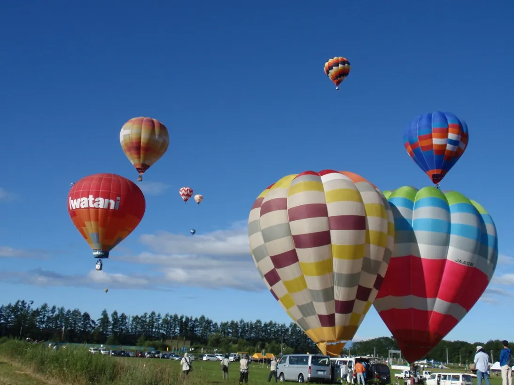
Stay
カミシホロホテル

Kamishihorohoteru
ペンション and オーベルジュ：旅とPizzaとお宿 咲色
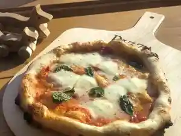
Penshon And Ooberuju : Tabi To Pizza Too Yado Saki Iro
湖々路の郷
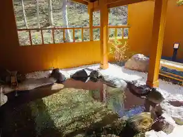
Mizuumi (Kurikaesi) Michi No Sato
山の旅籠 山湖荘
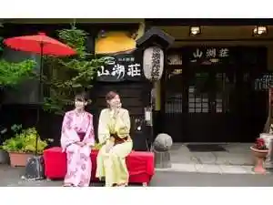
Yama No Hatago Yama Mizuumi Sou
東大雪ぬかびらユースホステル
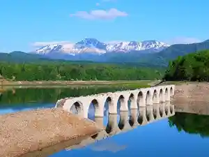
Toudai Yuki Nukabira Yuusuhosuteru
ペンション森のふくろう
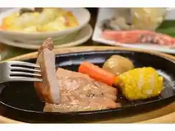
Penshon Mori Nofukurou
糠平温泉ホテル
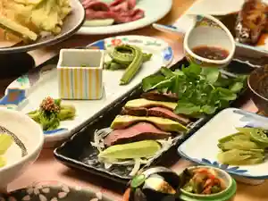
Nukabira Onsen Hoteru
糠平舘観光ホテル
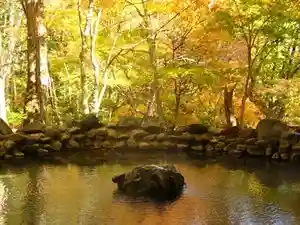
Nukabira Kan Kankou Hoteru
Dining
ぬかびら源泉郷スキー場センタースキーレストラン
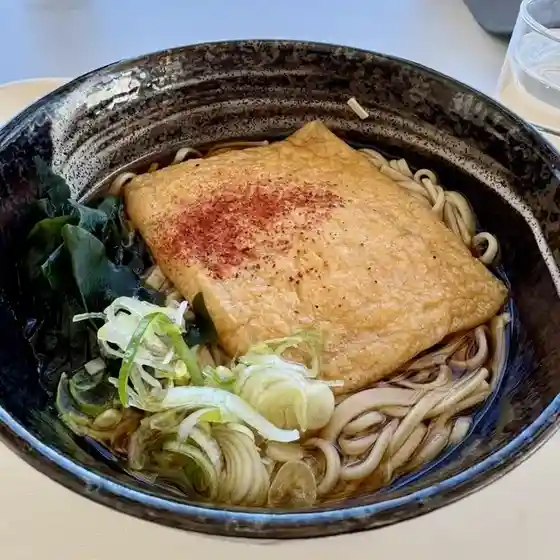
Nukabira Gensen Sato Sukii Ba Sentaasukiiresutoran
トカトカ 上士幌店
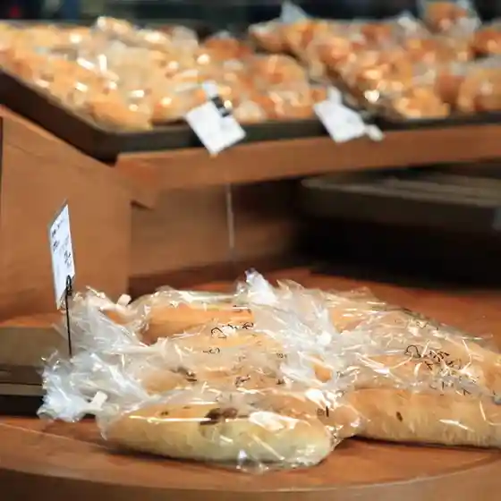
Tokatoka Kamishihoro Mise
水月菓子店
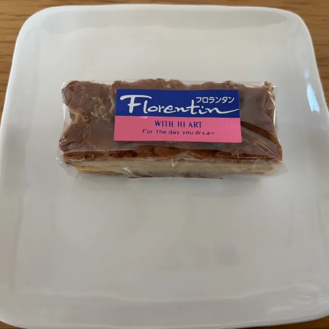
Suigetsu Kashi Mise
かつ之
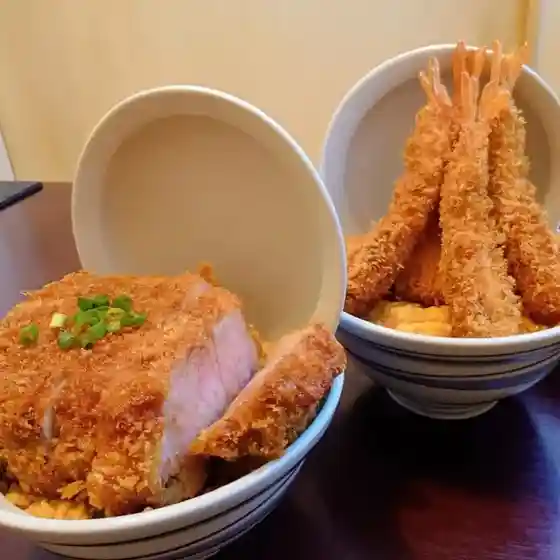
Katsu Yuki
居酒屋 善
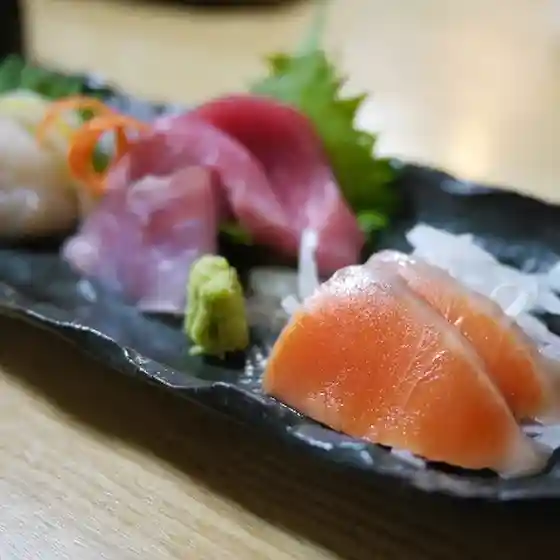
Izakaya Zen
みどり鮨
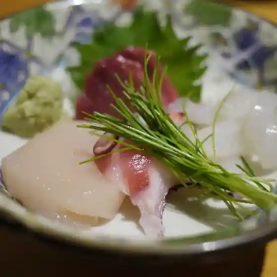
Midori Sushi
ピッコロ
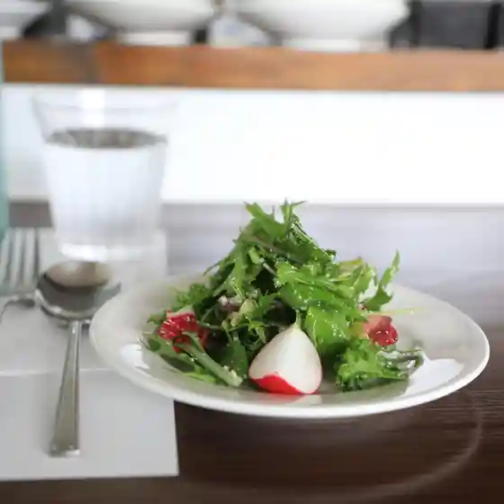
Pikkoro
東大雪ぬかびらユースホステル
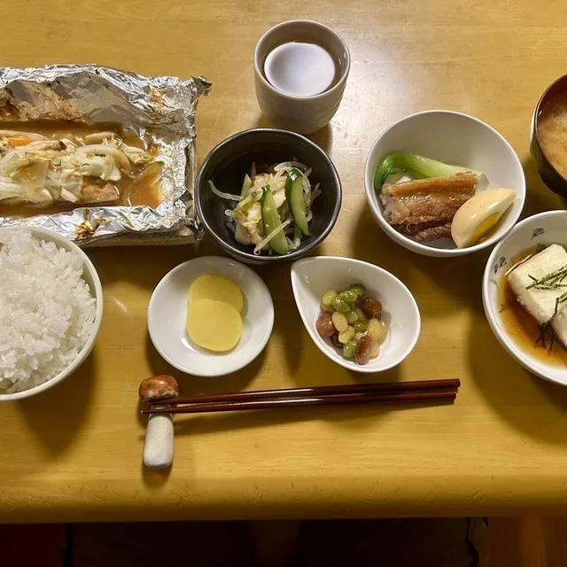
Toudai Yuki Nukabira Yuusuhosuteru
三国峠cafe
Mikunitouge Cafe
三股山荘
Mimata Sansou
ナイタイ高原牧場ナイタイテラス
Naitai Kougen Bokujou Naitaiterasu
麺や 野中商店
Men Ya Nonaka Shouten
ナシラ舎
Nashira Sha
畑の中のレストラン キタノモシリ
Hatake No Nakano Resutoran Kitanomoshiri
旅とPizzaとお宿 咲色
Tabi To Pizza Too Yado Saki Iro
ピーコックス
Piikokkusu
一休
Ikkyuu
山湖荘
Yama Mizuumi Sou
ビストロ ふうか
Bisutoro Fuuka
ふれあいプラザ浴場
Fureai Puraza Yokujou
Leaf
Leaf
ひがし大雪自然館
Higashi Ooyuki Shizen Kan
珈琲館 のんのん
Koohii Kan Nonnon
ラ ターブル ドゥ カミシホロ
Ra Taaburu Dou Kamishihoro